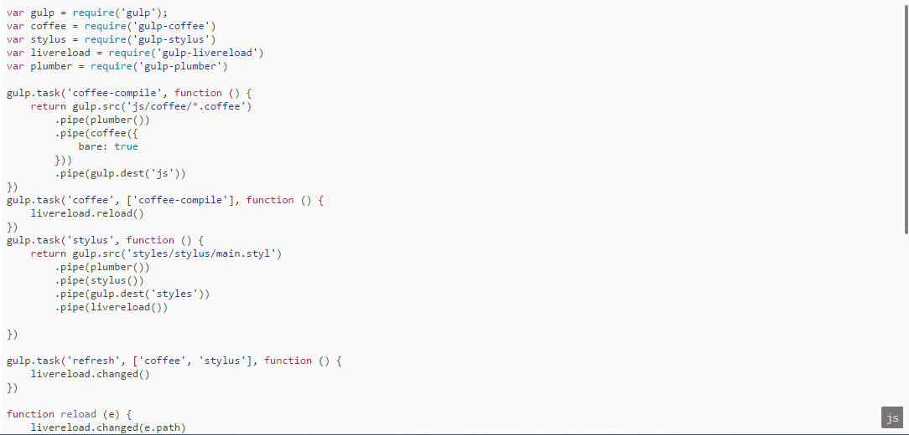
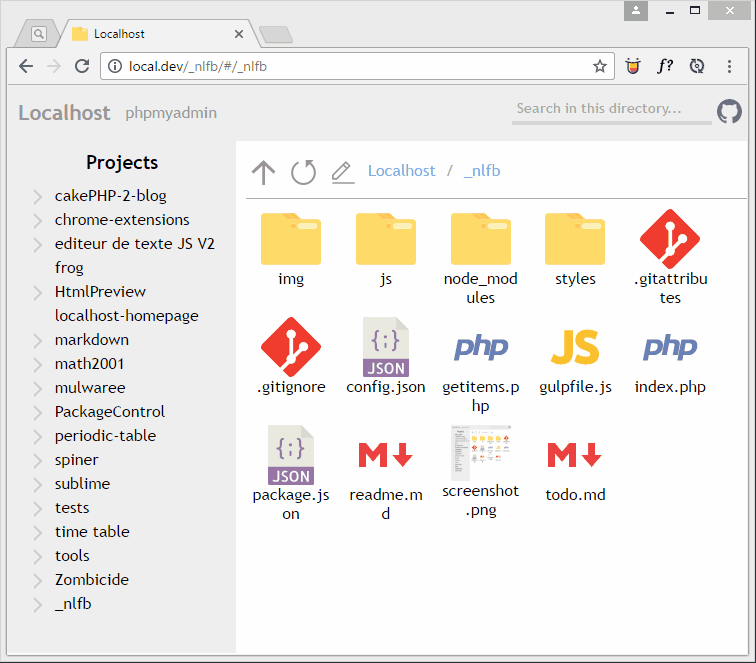

NLFB is a simple one-page web "app" that gives you a pretty nice interface to browse your projects.
It comes with different useful features, such as:
NLFB is a simple one-page web "app" that gives you a pretty nice interface to browse your projects.
It comes with different useful features, such as:
The sidebar is resizable ;)
The search bar looks for folders and files through the current directory. The special point is that it is based on the order of the letters, so says you type ctrl, it would bring up controller (if there's any of course)
Type your path and hit enter to get there,
Hold ctrl to keep the panel open.
You can preview your code inside the app, and it's colored with a GitHub-like color scheme, using highlightjs!
Note: if it is an image, the image will simply be rendered.
There's a custom context menu with few options.
You can now resize the icons by pressing ctrl and pushing/pulling the wheel of your mouse
No, installing NLFB is really quick, and easy.
If you have git, open a terminal, get into your www directory and run:
$ git clone "https://github.com/math2001/nlfb.git" "_nlfb"www directory.
Open the index.php file in your favorite text editor and paste this line at the very beginning:
<?php header('location: /_nlfb/'); ?>That's it! You're done! Open localhost and enjoy!
Say you're on http://localhost/something. Well, if you want to open it in NLFB, just click on this link
Open with NLFB (drag it to your bookmark bar), it will open it in a new tab.
Made with ♥ by math2001
You can ignore different items by adding them to the corresponding list in config.json file at the root of the project:
exclude_projects: affect the side bar, they cannot be shown.hidden_folders: affect the main panel, for the folders.hidden_files: affect the main panel too, for the files.You can show the hidden files and folders by right clicking and choosing Toggle Hidden Items.
You can choose the total time used during the browsing transition. Just set the variable browsing_transition_total_time to the value you want (in ms) in the config.json file.
You can as well choose the total time used during the folders deployment in the sidebar by setting the variable deployment_transition (in ms)
When you click on the edit path (the pencil) button, an input shows up. Type the path of the item you want to go into and hit enter. If you want to keep this panel open, then press ctrl with enter.
To cancel, just press Escape
You can replace the folder icon by your image. And its really simple! All you have to do is to save this image at the root of your folder, and name it screenshot.<whatever>. And it works with any folder!
Try to use square picture, it will look better.
To open a link in a new tab, just hold ctrl while you click
Made with ♥ by math2001
Made with ♥ by math2001
Made with ♥ by math2001